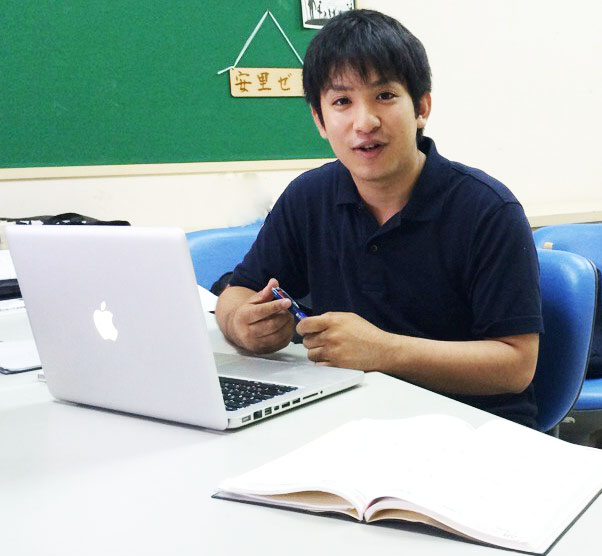

就職内定体験談
第１回は、株式会社 沖縄海邦銀行 に内定を頂いた藏本 拓也さんにお話を伺ってみました！
大学の講義や講演会でＩＴ関係会社の中小企業の方々と交流する機会が多くあり、沖縄に会社を起業し雇用を増やし、県外に負けないくらい沖縄の経済を盛り上げていきたいという熱い意見があり、私もその意見に共感し沖縄のために働きたいと考えるようになりました。その中心となり沖縄の会社を支えることができる企業が銀行だと思い県内の銀行を目指すことを決断しました。県内での就職活動は非常に厳しいことが現状としてあるので、合同企業説明会や会社訪問を積極的に行ない、足を動かし行動することで他の学生と差別化を図り、また地元の中学校の男子バスケットボール部の外部コーチを行うことで他の学生が経験できないエピソードを発信することができ、面接のときに印象が強かったと思います。大学では、勉強以外にも自由な時間が作れる場所なので、自由な時間を有効に使い、自分の為になるような時間作りが就職活動において大切なことだと思います。